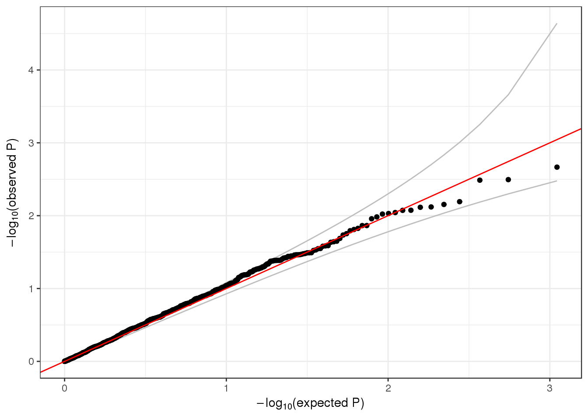
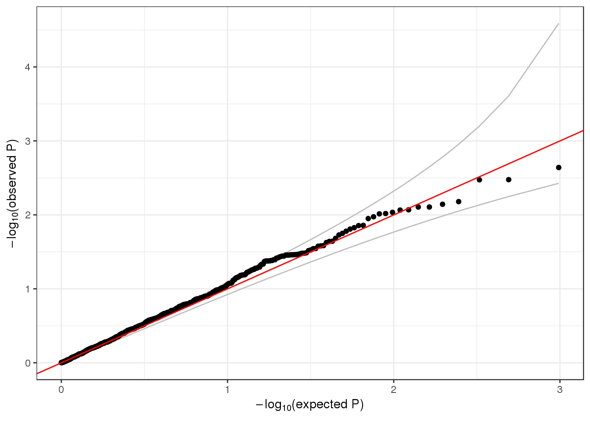
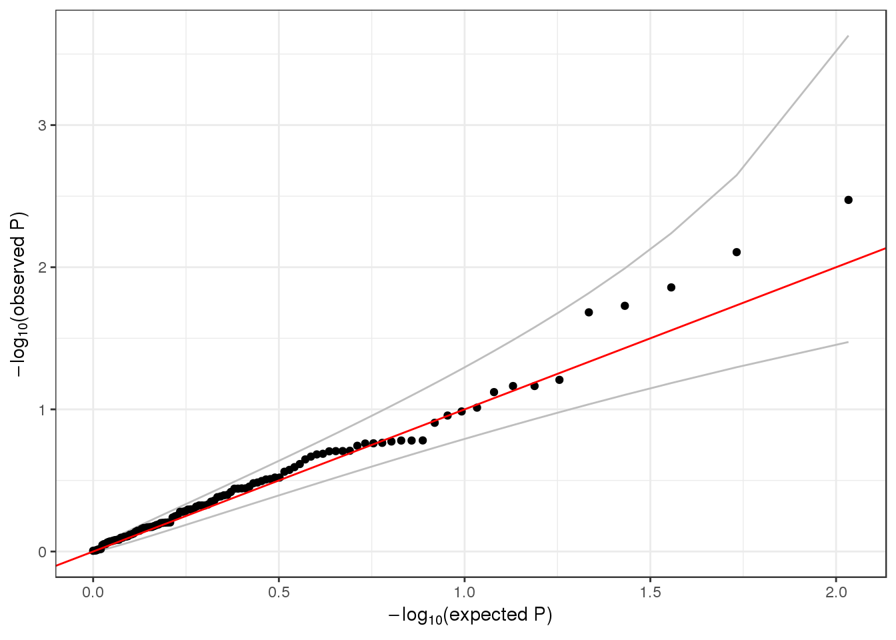

8 Association tests
Since TOPMed has many studies with related participants, we focus on linear mixed models. Logistic mixed models are also possible using GENESIS, see the GMMAT paper.
8.1 Null model
The first step in an association test is to fit the null model. We use the AnnotatedDataFrame with phenotypes, and a GRM. If the sample set involves multiple distinct groups with different variances for the phenotype, we recommend allowing the model to use heterogeneous variance among groups.
data.path <- "https://github.com/smgogarten/analysis_pipeline/raw/devel/testdata"
sampfile <- "1KG_phase3_subset_annot.RData"
if (!file.exists(sampfile)) download.file(file.path(data.path, sampfile), sampfile)
annot <- TopmedPipeline::getobj(sampfile)
grmfile <- "grm.RData"
if (!file.exists(grmfile)) download.file(file.path(data.path, grmfile), grmfile)
grm <- TopmedPipeline::getobj(grmfile)
rownames(grm$grm) <- colnames(grm$grm) <- grm$sample.id
library(GENESIS)
nullmod <- fitNullMM(annot, outcome="outcome", covars=c("sex", "Population"),
covMatList=grm$grm, group.var="Population", verbose=FALSE)We also recommend taking an inverse normal transform of the residuals and refitting the model. This is done separately for each group, and the transformed residuals are rescaled. See the full procedure in the
pipeline documenation.
8.2 Single-variant tests
Single-variant tests are the same as in GWAS. We use the assocTestMM function in GENESIS. We have to create a SeqVarData object including both the GDS file and the sample annotation containing phenotypes.
library(SeqVarTools)
gdsfile <- "1KG_phase3_subset_chr1.gds"
if (!file.exists(gdsfile)) download.file(file.path(data.path, gdsfile), gdsfile)
gds <- seqOpen(gdsfile)
seqData <- SeqVarData(gds, sampleData=annot)
assoc <- assocTestMM(seqData, nullmod)
head(assoc)## snpID chr n MAF minor.allele Est SE
## 1 1 1 1126 0.0039964476 alt 0.037896432 0.3547545
## 2 2 1 1126 0.0492895204 alt 0.173271721 0.1038710
## 3 3 1 1126 0.0004440497 alt 0.034881381 1.0211652
## 4 4 1 1126 0.0008880995 alt 0.003698581 0.6811618
## 5 5 1 1126 0.0071047957 alt -0.062695115 0.2685319
## 6 6 1 1126 0.0022202487 alt 0.574104228 0.4504458
## Wald.Stat Wald.pval
## 1 1.141145e-02 0.91492830
## 2 2.782705e+00 0.09528713
## 3 1.166797e-03 0.97275083
## 4 2.948287e-05 0.99566766
## 5 5.450992e-02 0.81539366
## 6 1.624413e+00 0.20247756We make a QQ plot to examine the results.
library(ggplot2)
qqPlot <- function(pval) {
pval <- pval[!is.na(pval)]
n <- length(pval)
x <- 1:n
dat <- data.frame(obs=sort(pval),
exp=x/n,
upper=qbeta(0.025, x, rev(x)),
lower=qbeta(0.975, x, rev(x)))
ggplot(dat, aes(-log10(exp), -log10(obs))) +
geom_line(aes(-log10(exp), -log10(upper)), color="gray") +
geom_line(aes(-log10(exp), -log10(lower)), color="gray") +
geom_point() +
geom_abline(intercept=0, slope=1, color="red") +
xlab(expression(paste(-log[10], "(expected P)"))) +
ylab(expression(paste(-log[10], "(observed P)"))) +
theme_bw()
}
qqPlot(assoc$Wald.pval)
8.3 Sliding window tests
For rare variants, we can do burden tests or SKAT on sliding windows using the GENESIS function assocTestSeqWindow. We restrict the test to variants with alternate allele frequency < 0.1. (For real data, this threshold would be lower.) We use a flat weighting scheme.
assoc <- assocTestSeqWindow(seqData, nullmod, test="Burden", AF.range=c(0,0.1),
weight.beta=c(1,1), window.size=5, window.shift=2)
names(assoc)## [1] "param" "window" "nsample" "results" "variantInfo"head(assoc$results)## chr window.start window.stop n.site dup burden.skew Score
## 1 1 966001 971000 1 0 11.036036 0.30138968
## 2 1 968001 973000 1 1 11.036036 0.30138968
## 3 1 970001 975000 1 1 11.036036 0.30138968
## 4 1 982001 987000 1 0 3.041979 16.03409196
## 5 1 984001 989000 1 1 3.041979 16.03409196
## 6 1 1022001 1027000 1 0 33.466573 0.03348047
## Var Score.stat Score.pval
## 1 7.9529830 0.011421594 0.91489064
## 2 7.9529830 0.011421594 0.91489064
## 3 7.9529830 0.011421594 0.91489064
## 4 92.5372698 2.778254702 0.09555224
## 5 92.5372698 2.778254702 0.09555224
## 6 0.9598379 0.001167845 0.97273860head(assoc$variantInfo)## variantID allele chr pos n.obs freq weight
## 1 1 1 1 970546 1126 0.0039964476 1
## 2 2 1 1 985900 1126 0.0492895204 1
## 3 3 1 1 1025045 1126 0.0004440497 1
## 4 4 1 1 1265550 1126 0.0008880995 1
## 5 5 1 1 1472676 1126 0.0071047957 1
## 6 6 1 1 1735725 1126 0.0022202487 1qqPlot(assoc$results$Score.pval)For SKAT, we use the Wu weights.
assoc <- assocTestSeqWindow(seqData, nullmod, test="SKAT", AF.range=c(0,0.1),
weight.beta=c(1,25), window.size=5, window.shift=2)
head(assoc$results)## chr window.start window.stop n.site dup Q_0 pval_0 err_0
## 1 1 966001 971000 1 0 4.684458e+01 0.91489064 0
## 2 1 968001 973000 1 1 4.684458e+01 0.91489064 0
## 3 1 970001 975000 1 1 4.684458e+01 0.91489064 0
## 4 1 982001 987000 1 0 1.419993e+04 0.09555224 0
## 5 1 984001 989000 1 1 1.419993e+04 0.09555224 0
## 6 1 1022001 1027000 1 0 6.858109e-01 0.97273860 0head(assoc$variantInfo)## variantID allele chr pos n.obs freq weight
## 1 1 1 1 970546 1126 0.0039964476 22.709172
## 2 2 1 1 985900 1126 0.0492895204 7.431881
## 3 3 1 1 1025045 1126 0.0004440497 24.734926
## 4 4 1 1 1265550 1126 0.0008880995 24.472547
## 5 5 1 1 1472676 1126 0.0071047957 21.067933
## 6 6 1 1 1735725 1126 0.0022202487 23.701317qqPlot(assoc$results$pval_0)
8.4 Exercise: logistic regression
fitNullMM can use a binary phenotype as the outcome variable by specifying the argument family=binomial. Use the status column in the sample annotation to fit a null model for simulated case/control status. Then run a single-variant test and a sliding window test using this model.
8.5 Aggregate tests
8.5.1 Variant annotation
Rare variants are generally aggregated into some meaningful units for association testing to decrease multiple testing burden and increase statistical power. Various genomic and epigenomic annotations can be used to define aggregation units and filter them. A large number of annotations are available through the Whole Genome Sequence Annotator (WGSA) to the TOPMed users.
8.5.2 Defining aggregate units
We will be using a gene-based aggregation unit, where each unit is a GENCODE gene and 20 kb flanking region upstream and downstream of it. For real data, one will likely filter variants within each unit based on various annotations (examples include loss of function, conservation, deleteriousness scores, etc.).
The aggregation units are defined in an R dataframe. Each row of the dataframe specifies a variant (chromosome, position, ref, alt) and the group identifier (group_id) assigned to it. Mutiple rows with different group identifiers can be specified to assign a variant to different groups (for example a variant can be assigned to mutiple genes).
aggfile <- "variants_by_gene.RData"
if (!file.exists(aggfile)) download.file(file.path(workshop.path, aggfile), aggfile)
aggunit <- TopmedPipeline::getobj(aggfile)
names(aggunit)## [1] "group_id" "chromosome" "position" "ref" "alt"head(aggunit)## # A tibble: 6 x 5
## group_id chromosome position ref alt
## <chr> <chr> <int> <chr> <chr>
## 1 ENSG00000000005.5 X 99850725 A G
## 2 ENSG00000000938.8 1 27960254 A G
## 3 ENSG00000001084.6 6 53357691 C T
## 4 ENSG00000001084.6 6 53413986 T C
## 5 ENSG00000001084.6 6 53466979 C T
## 6 ENSG00000001167.10 6 41064020 A G# an example of variant that is present in mutiple groups
library(dplyr)
mult <- aggunit %>%
group_by(chromosome, position) %>%
summarise(n=n()) %>%
filter(n > 1)
inner_join(aggunit, mult[2,1:2])## # A tibble: 4 x 5
## group_id chromosome position ref alt
## <chr> <chr> <int> <chr> <chr>
## 1 ENSG00000188157.9 1 985900 C T
## 2 ENSG00000217801.5 1 985900 C T
## 3 ENSG00000242590.1 1 985900 C T
## 4 ENSG00000273443.1 1 985900 C T8.5.3 Association testing with aggregate units
We can run a burden test or SKAT on each of these units using the GENESIS function assocTestSeq. This function expects a list, where each element of the list is a dataframe representing a single aggregation unit and containing the unique variant.id assigned to each variant in a GDS file. We use the TopmedPipeline function aggregateListByAllele to quickly convert our single dataframe to the required format. This function can account for multiallelic variants (the same chromosome, position, and ref, but different alt alleles). The first argument is the GDS object returned by seqOpen (see above).
library(TopmedPipeline)
aggVarList <- aggregateListByAllele(gds, aggunit)
length(aggVarList)## [1] 932head(names(aggVarList))## [1] "ENSG00000188157.9" "ENSG00000242590.1" "ENSG00000217801.5"
## [4] "ENSG00000273443.1" "ENSG00000131591.13" "ENSG00000237330.2"aggVarList[[1]]## variant.id chromosome position ref nAlleles allele allele.index
## 1 1 1 970546 C 2 G 1
## 2 2 1 985900 C 2 T 1As in the previous section, we must fit the null model before running the association test.
assoc <- assocTestSeq(seqData, nullmod, test="Burden", aggVarList=aggVarList,
AF.range=c(0,0.1), weight.beta=c(1,1))
names(assoc)## [1] "param" "nsample" "results" "variantInfo"head(assoc$results)## n.site n.sample.alt burden.skew Score Var
## ENSG00000188157.9 2 116 2.867095 16.33548164 99.2100284
## ENSG00000242590.1 2 116 2.867095 16.33548164 99.2100284
## ENSG00000217801.5 1 107 3.041979 16.03409196 92.5372698
## ENSG00000273443.1 1 107 3.041979 16.03409196 92.5372698
## ENSG00000131591.13 1 1 33.466573 0.03348047 0.9598379
## ENSG00000237330.2 1 1 33.466573 0.03348047 0.9598379
## Score.stat Score.pval
## ENSG00000188157.9 2.689727688 0.10099707
## ENSG00000242590.1 2.689727688 0.10099707
## ENSG00000217801.5 2.778254702 0.09555224
## ENSG00000273443.1 2.778254702 0.09555224
## ENSG00000131591.13 0.001167845 0.97273860
## ENSG00000237330.2 0.001167845 0.97273860head(names(assoc$variantInfo))## [1] "ENSG00000188157.9" "ENSG00000242590.1" "ENSG00000217801.5"
## [4] "ENSG00000273443.1" "ENSG00000131591.13" "ENSG00000237330.2"head(assoc$variantInfo[[1]])## variantID allele chr pos n.obs freq weight
## 1 1 1 1 970546 1126 0.003996448 1
## 2 2 1 1 985900 1126 0.049289520 1qqPlot(assoc$results$Score.pval)
seqClose(gds)8.5.4 Exercise
Since we are working with a subset of the data, many of the genes listed in group_id have a very small number of variants. Create a new set of units combining adjacent genes, and run SKAT using those units.